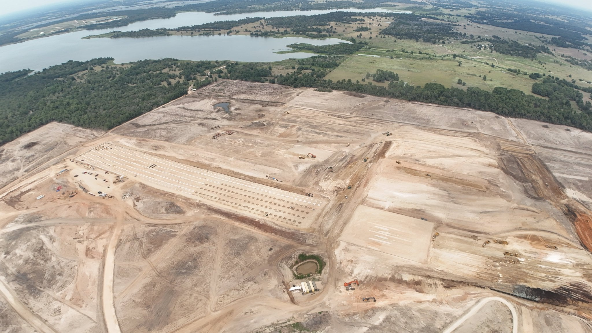
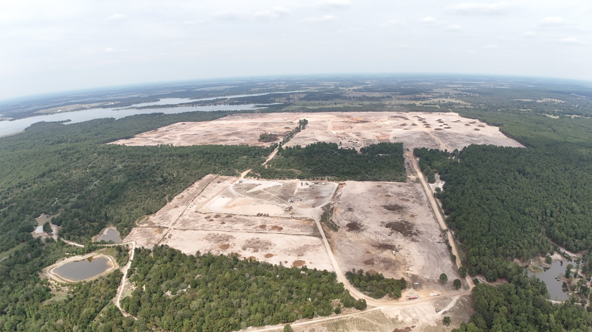

테라팹 10분의1 땅고르기 끝남
이제 건물짓는중
내년중 첫실행될예정


테라팹 10분의1 땅고르기 끝남
이제 건물짓는중
내년중 첫실행될예정
반도체 시장 돌아가는 꼬라지보고 시간, 돈 얼마를 갈아넣든 내가 직접 만들어야겠단 생각을 하자마자
바로 실천하는건 성공여부를 떠나서 대단하긴하네
댓글 야부리터는거보니까 일론 이새끼를 넘 얕보네.. 이새끼는 오래걸릴 요소가있으면 돈으로 쳐발라서 해결하는놈이라 층고며 샤프트 폭이며 다 존나크게지어서 대충 꽂을거임. fab이 워낙 고하중이라 면적할당이 애처로운수준인데 백퍼임.. 걍 저기 사진 기둥 간격만 봐도 대충 각나옴 서포트팹도 조깐거보면.. 더블팹도 안할꺼같고.. 건물은 1년 진짜 길어봐야 2년일거고 하우징 붙고 장비넣는거 순식간일거임.
그리고 모듈화해서 1섹터끝나면 복붙으로 같은제품 양산라인 지으면 그만인데다.. 지들꺼만든다고 저지랄하는거라 더 쉬울거임
이새끼는 시티에서 전기 공급 늦는다고 하면 그냥 임대 발전기 싹빌려서 지 공장 풀로 돌려버리는 돌아이임
ㅋㅋㅋ 반도체가 자동차처럼 돈 처바르면 되는줄 아나 ㅋㅋㅋ 반도체가 장비싸움인것 처럼 보여도 레시피 잡는게 가내 수공업 수준인데 ㅋㅋㅋ
좆밖겠네 ㅋㅋㅋ
애초 인텔1.4나노 기술로스타트할거라 ㄱㅊ을듯
이미 인텔이 협력할거라
인텔 경쟁력 잃은지가 천만년은 더 됐을듯;;;
로직도 로직인데 메모리쪽은 창신보다 못할듯;;; 애초에 코쟁이 정신상태론 반도체 ㅈ밖기 딱 좋을듯
전라도는 왜 테라팹유치시위를 안하고 있누 ㅋㅋㅋㅋㅋㅋㅋㅋㅋ
저게먼데